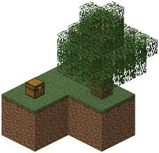
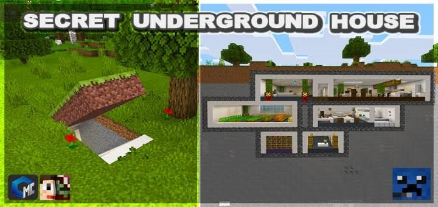

ABOUT MINECRAFT |
LINKS |
HOME |
1. SKYBLOCK HARDCORE MAP

SKYBLOCK! is an opened world survival map where you start on a tiny island in the sky. All necessary items, blocks and materials are located through different skyblock islands throughout the world.

2. CONNECTED GLASS MOD
 Connected Glass means there will be no outer line when a glass is placed together. only 1.18-1.19
Connected Glass means there will be no outer line when a glass is placed together. only 1.18-1.19
Download Resource pack .mcpack
Download behaviour pack .mcpack
3. SECRET UNDERGROUND BASE

Secret underground base 1.18-1.19.
- Have elevator
- chest room
- Enchanting room and many etc